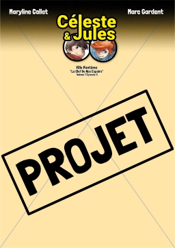
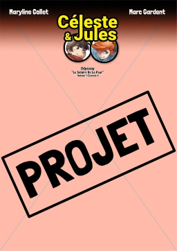

Suivez @CelesteEtJules sur vos réseaux préférés


La BD en boutique !
Retrouvez nos Heros!


Le Projet
Cycle "Céleste Et Jules : Des Étoiles Plein Les Yeux"
Les Toits de Paris : Une Rencontre En Cache Une Autre [CJS-S1E1]
Statut édition en accès anticipé disponible !
Jardins Suspendus : Une Porte Vers l'Espace [CJS-S1E2]
Statut En cours de conception
Ville Fantôme : la clef de nos espoirs [CJS-S1E3]

Statut À Planifier
Odyssey : Le Salaire de la peur [CJS-S1E4]

Statut À Planifier
La Résistance [CJS-S1E5]
Statut À Planifier
Auteurs